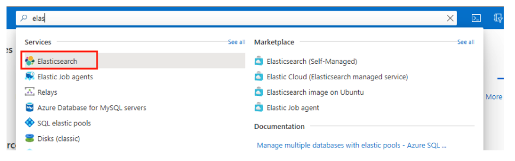
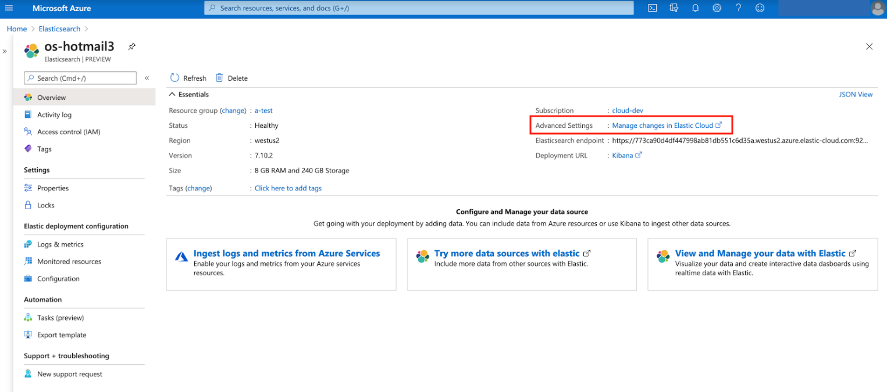
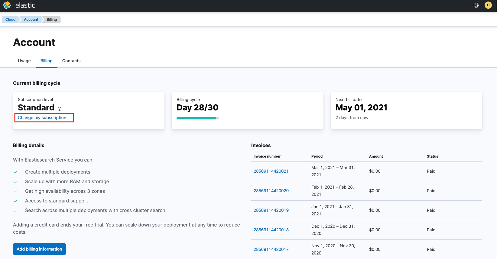
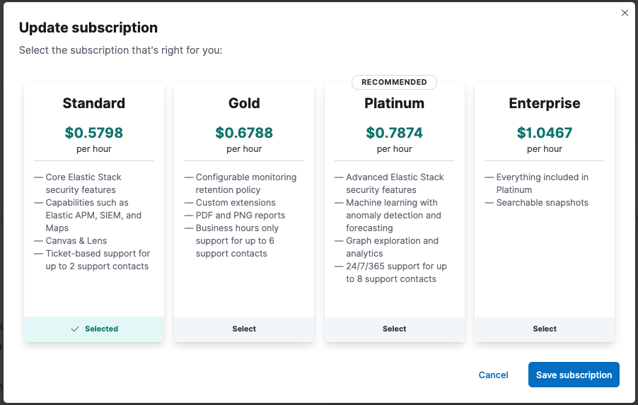
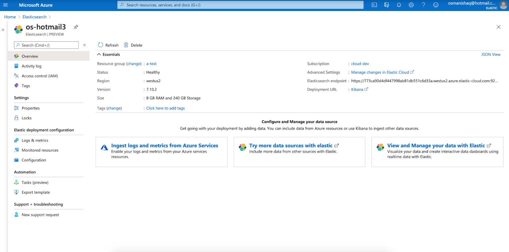
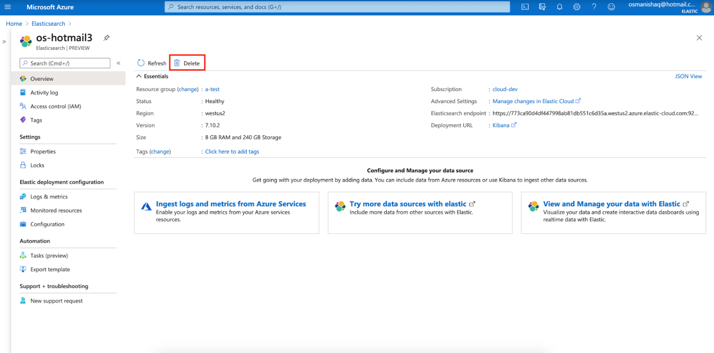
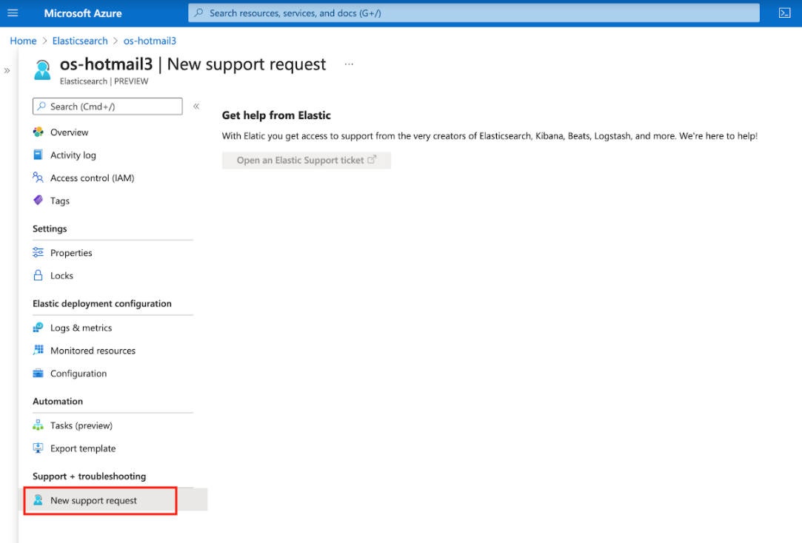

Native Azure integrationedit
This functionality is in beta and is subject to change. The design and code is less mature than official GA features and is being provided as-is with no warranties. Beta features are not subject to the support SLA of official GA features.
The Elastic Cloud native Azure integration allows you to deploy managed instances of the Elastic Stack directly in Azure, through the Azure integrated marketplace. The integration brings the following benefits:
-
Easy deployment for managed Elastic Stack instances
Elastic Stack instances managed by Elastic can be deployed directly from the Azure console. This provides the complete Elastic Stack experience with all commercial features.
-
Integrated billing
You are billed directly to your Azure account; no need to configure billing details in Elastic.
-
Easy consolidation of your Azure logs in Elastic
Use a one-click setup to ingest logs from your Azure services into the Elastic Stack.
See the following sections to learn more:
-
Getting started
-
Managing your Elastic Stack deployment
-
Configuring logs and metrics
-
Configuring Private Link
-
Support
Getting startededit
- What is the pricing for this offer?
- Pricing is pay-as-you-go per hour for each Elastic Stack deployment that you have created. Charges are applied to your Azure bill at the end of the month. You can use the Elastic Cloud Pricing Calculator to size a deployment and view the corresponding hourly rate.
Elastic charges include:
- How do I get started?
-
Elastic Cloud is available as an offering through the Azure console. You can access it in two ways:
-
Search for
elasticin the Azure Search bar. On the results page, theElasticsearchlink under the Services menu will open a page that guides you through deploying the Elastic Stack. -
Navigate to the Azure Marketplace page. There, You’ll see the Elastic native integration listed as Elastic Cloud (Elasticsearch managed service) MP++. Click the link and follow the on-screen steps to deploy the Elastic Stack.

When you create a deployment, an Elastic Stack cluster is created for you. The size of this deployment is 16GB of RAM and 480GB of storage, across two availability zones for redundancy. The size of the deployment, both RAM and storage, can be changed directly in the Elastic console. Usage charges are based on the size of your deployment so ensure that your instance is sized efficiently. The deployment defaults to the latest available version of the Elastic Stack. See our Version policy to learn more about when new versions are made available and old versions are removed from service.
-
- Which Azure regions are supported?
-
Currently, the
West US 2 - WashingtonandUK South (London)regions are supported for the Azure native integration. In the near future, all Azure regions that are supported in Elastic Cloud will be available. - Which Elastic Cloud subscription levels are available?
- Elastic Cloud offers a number of different subscription levels. Your Elastic Cloud subscription will default to the Platinum subscription, giving you immediate access to advanced Elastic Stack features like machine learning, as well as premium support response time SLAs.
- How can I change my Elastic Cloud subscription level?
-
You can modify your subscription level on the billing page in the Elastic console.
- Open the Elastic Stack list deployments page in Azure. From here, you can view any existing Elastic Stack deployments that you have created.
- Click on a deployment to open the deployment overview page.
-
Click the Advanced Settings link to access your deployment in the Elastic Cloud console.
 - In the Elastic Cloud console, click your account avatar icon at the top of the page, and then select Account & Billing.
-
Select the Billing tab and click Change my subscription.
 -
Select the subscription level that you’d like.

Managing your Elastic Stack deploymentedit
- What is included in my Elastic Stack deployment?
-
Each Elastic Stack deployment includes a number of Elastic Stack components:
- An Elasticsearch cluster
- A Kibana instance which provides data visualization and a front-end for the Elastic Stack
- An APM server that allows you to easily collect application traces
- An Enterprise Search instance that allows you to easily build a search experience with an intuitive interface
- How can I access my Elastic Stack deployment?
-
You can access your Elastic Stack deployment in a few ways. First, you need to navigate to the deployment overview page in Azure:
- Open the Elastic Stack list deployments page in Azure. From here, you can view any existing Elastic Stack deployments that you have created.
-
Click on a deployment to open the deployment overview page.
You now have a few options to access your deployment:
- Elasticsearch endpoint - the URL for the Elasticsearch cluster itself
- Kibana endpoint - the UI for the Elastic Stack, a great way for new users to get started
- Elastic Cloud - Click the Advanced Settings link to access your deployment in the Elastic Cloud console, where you can make changes such as resizing or upgrading your deployment.
- How can I modify my Elastic Stack deployment?
-
You can modify your Elastic Stack deployment in the Elastic Cloud console, which you can access from the Azure UI through the Advanced Settings link on the deployment overview page. In the Elastic Cloud console you can perform a number of actions against your deployment, including:
- Re-size to increase or decrease the amount of RAM, CPU, and storage available to your deployment, or to add additional availability zones.
- Upgrade your deployment to a new Elastic Stack version.
- Enable or disable individual Elastic Stack components such as APM, Machine Learning, and Enterprise Search.
- Configure a warm tier for a hot-warm deployment.
- Update Elastic Stack user settings in the component YML files.
- Add or remove custom plugins.
- Configure Private Link and IP filtering.
- Monitor your Elastic Stack deployment to ensure it remains healthy.
- Add or remove API keys to use the REST API.
- And more
- How can I delete my deployment?
-
You can delete your deployment directly from the Azure console. The delete operation, when evoked from Azure, will perform clean-up activities in the Elastic console to ensure any running components are removed, so that no additional charges occur.

Configuring logs and metricsedit
- How do I monitor my existing Azure services?
-
The Elastic Cloud native Azure integration greatly simplifies logging for Azure services with the Elastic Stack. This integration supports the easy setup of Azure platform logs, including:
- Azure subscription logs
- Azure resources logs (see Supported categories for Azure Resource Logs for examples)
The following log types are not supported as part of this integration:
- Azure tenant logs
- Logs from Azure compute services, such as Virtual Machines
In the Azure console, you can configure ingestion of Azure logs into either a new or existing Elastic Stack deployment:
- When you create a new deployment, from the Logs & metrics tab in Azure you can specify the log type and a key/value tag pair. Any Azure resources that match on the tag value will automatically send log data to the Elastic Stack deployment, once it’s been created.
- For existing deployments, you can configure Azure logs from the deployment overview page in the Azure console.
Note that following restrictions for logging:
- Only logs from non-compute Azure services are ingested as part of the above configuration. Logs from compute services, such as Virtual Machines, into the Elastic Stack will be added in a future release.
-
The Azure services must be running in one of the following regions:
- Eastus
- Eastus2
- Westus2
- Southcentralus
- Uksouth
- Southeastasia
- Westeurope
- Australiaeast
- Northeurope
All regions will be supported in the future.
- How do I ingest metrics from my Azure services?
- Metrics are not supported as part of the current native integration. This will be implemented in a future phase. Metrics can still be collected from all Azure services by configuring Metricbeat.
Configuring Private Linkedit
- How do I configure Azure Private Link?
- Elastic Cloud native Azure integration is currently in an open beta state. If you’d like to test configuring a private link endpoint to securely connect your Elastic Stack deployment to your Azure services, contact our support team.
Getting supportedit
- How do I get support?
-
Support is provided by Elastic. To open a support case:
- Navigate to the deployment overview page in the Azure console.
- Click the Support tab.
-
Click on the link to launch the Elastic console where you can provide further details.
A member of the Elastic Support team will respond based on the SLA response time of your subscription.
 - How can I change my subscription level / support level?
- Your Elastic subscription level includes the support level. See How can I change my Elastic Cloud subscription level? to make an update.